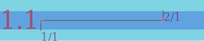
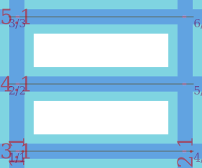
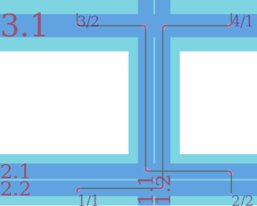
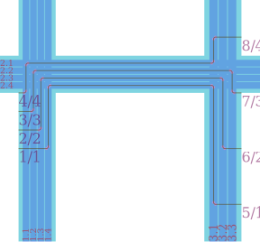
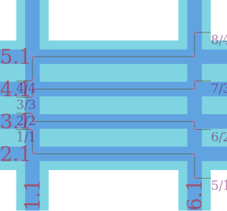
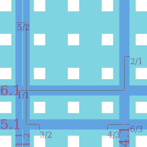
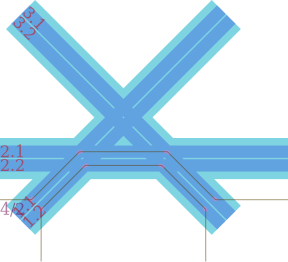
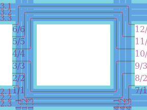
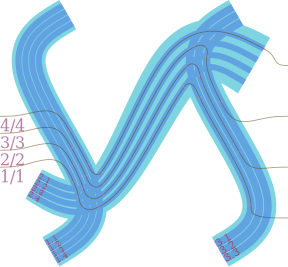
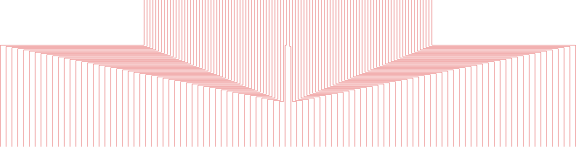

Channel Autorouter
The channel autorouter connects pairs of pins by routing wires through a user-defined network of channels. Routing proceeds in two steps: channel assignment (choosing which channels each net's wire passes through) and track assignment (assigning non-overlapping tracks within each channel). See Concepts: Channel Autorouter for a conceptual overview.
The full code for these examples can be found in examples/ChannelAutorouter/ChannelAutorouter.jl in the DeviceLayout.jl repository.
using DeviceLayout, FileIO
include("../../../examples/ChannelAutorouter/ChannelAutorouter.jl")
using .ChannelAutorouterSimple
One horizontal channel, two pins, one net. The simplest possible autorouting scenario.
c, ar = ChannelAutorouter.example_simple()
Parallel
Three nets routed left-to-right at matching heights through a grid of two vertical and three horizontal channels. No crossings needed.
c, ar = ChannelAutorouter.example_parallel()
Crossing
Two nets that must cross in a shared vertical channel, forcing the router to assign multiple tracks.
c, ar = ChannelAutorouter.example_crossing()
There is also a variant of this example using the schematic routing interface.
Fan-in / fan-out
Clustered pins on one side, spread-out pins on the other, routed through a single shared horizontal channel. The router assigns multiple tracks to accommodate the asymmetric spacing.
c, ar = ChannelAutorouter.example_fanin_fanout()
Multichannel fan-out
Same topology as fan-in/fan-out, but with a dedicated horizontal channel per net. Each net uses exactly one track.
c, ar = ChannelAutorouter.example_multichannel_fanout()
Grid
A 4×4 grid of horizontal and vertical channels with pins on different edges. Nets take multi-hop paths through the grid.
c, ar = ChannelAutorouter.example_grid()
Angled channels
Non-Manhattan channels: two 45° diagonals crossing a horizontal channel. The router handles arbitrary channel geometry.
c, ar = ChannelAutorouter.example_angled()
Dense
Six nets sharing just two horizontal and two vertical channels. Forces three tracks per channel.
c, ar = ChannelAutorouter.example_dense()
B-spline channels
Curved channels using B-spline geometry with BSplineRouting transitions. Same fan-in/fan-out topology as above but with non-straight channels and a tapered channel.
c, ar = ChannelAutorouter.example_bspline()
100-net fan-out
100 nets fan out through a single wide channel from an inner row of pins to an outer row with twice the spacing.
c, ar = ChannelAutorouter.example_fanout100()